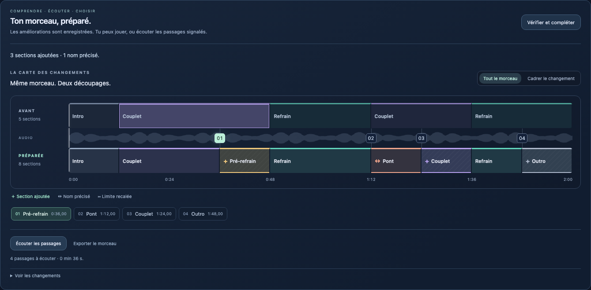

Prepare a song for REAPER.
Take your recording from audio import to a REAPER project in eight steps.
Step 1 / 8
Import a song
Open My songs and import an audio file from your computer.
- Leave Prepare automatically after import selected to start preparation when you import a file.
- Check the song title and artist. BandStudio uses them to find matching lyrics and chord charts.
- For several files, open Prepare a batch, add the files, then choose Start queue to start the queue.
IN THE APP
My songs → Import a song
Step 2 / 8
Prepare an existing song
Open the song in Song editor and choose 1 · Prepare.
- Installed engines separate instruments and analyse tempo, sections, lyrics and chords. BandStudio generates the click and spoken guides at the end.
- On Windows, add optional engines in Settings → Local analysis. Use Detailed preparation to rerun an individual analysis.
- The editor opens Listen and edit when preparation finishes. Running preparation again reuses completed steps and keeps manual edits.
IN THE APP
Song editor → 1 · Prepare
Step 3 / 8
Compare song sections
Open Sections in the song editor to compare the arrangement.
- Before shows the starting structure. Prepared shows the sections saved after analysis.
- Select a change and choose Zoom to change to zoom to the same part of both timelines.
- Choose Play this passage to hear the entrance. Use the section’s Edit button to adjust its boundary.
IN THE APP
Song editor → Sections

Step 4 / 8
Listen to a flagged word or passage
Open 2 · Listen and edit. The Focused listening list appears when there is something to check.
- Under Passage to review, choose a lyric line, chord, section or beat marker. The editor opens the matching tab.
- Select Play this passage to hear a short excerpt around the marker. BandStudio restores your previous loop afterward.
- Choose Edit in song editor to make a correction, or Next passage to listen to the next item.
IN THE APP
Focused listening → Play this passage

Step 5 / 8
Set the click and count-in
Open Song editor → Metronome and check the beginning, a later entrance and the ending.
- The detected grid follows tempo changes and fills missing pulses. Choose fixed mode to enter a constant tempo.
- Put the cursor on a downbeat and select Set beat 1 at the playhead. Check beats per bar and the count-in.
- Save changed fields with Apply to song. You can then protect the grid from fresh analysis.
IN THE APP
Song editor → Metronome
Step 6 / 8
Find and align the lyrics
Open Song sheet (Song sheet) and choose Correct and realign lyrics.
- BandStudio tries the full title, then a simplified title. It can check LRCLIB, lyrics.ovh, Paroles.net, Paroles2Chansons and artist catalogues.
- Words are timed against the vocals in your recording. A matching synchronized edition helps locate repeated choruses and account for video intros.
- Listen to flagged lines. To import your own LRC or SRT file, open Song editor → Lyrics → Correct or import lyrics.
IN THE APP
Song sheet → Correct and realign lyrics
Step 7 / 8
Choose chords and practise
Open Song editor → Chords and compare the charts against the passage you hear.
- Open chart opens the source. Use this chart selects that chart for your song.
- Set a capo if needed. The song sheet and teleprompter show the chords to play with that setting.
- In Tracks, choose My instrument. Solo your part or play along with the backing tracks. Slow down or loop a passage to practise.
IN THE APP
Song editor → Chords
Step 8 / 8
Export to REAPER
When ready, open 3 · Export to REAPER.
- Save pending notes and apply your settings. You can record your personal listening check under My listening checklist (optional).
- Choose Check and export project to export, or Check and open in REAPER to open it. BandStudio checks the media before export.
- Keep the .rpp file together with its Audio folder. Each new export gets its own folder.
IN THE APP
REAPER project → Check and open in REAPER